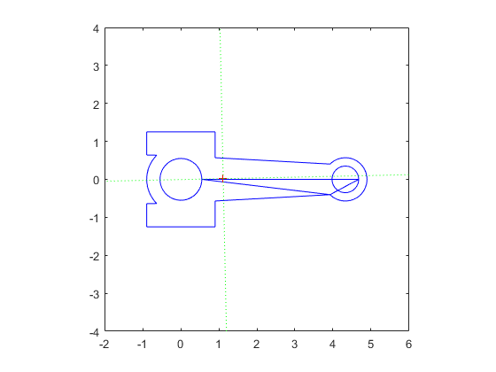

Contents
Problem 2
clc,clear,close all
g = 386.088;
m3 = .462;
L = 4.33;
a = 3.642;
IDc = .707;
tau = [13.69 13.67 13.64 13.67 13.66 13.76 13.74 13.73 13.79 13.67];
tau = (1/20)*tau;
sigma = std(tau)
tau = mean(tau)
sigma_tau = 100*sigma/tau
JG3 = (m3*g*a*tau^2)/(4*pi^2) - m3*a^2
sigma =
0.0025
tau =
0.6851
sigma_tau =
0.3621
JG3 =
1.5955
Problem 3
syms m3B m3C
CG3 = a - IDc/2
BG3 = L - CG3
Moment_eq = m3B*BG3 - m3C*CG3 == 0;
total_mass_eq = m3B + m3C == m3;
sol = solve([Moment_eq total_mass_eq],[m3B m3C]);
m3B_sol = double(sol.m3B)
m3C_sol = double(sol.m3C)
JAPP = m3B_sol*BG3^2 + m3C_sol*CG3^2
CG3 =
3.2885
BG3 =
1.0415
m3B_sol =
0.3509
m3C_sol =
0.1111
JAPP =
1.5823
Problem 4
clc,clear,close all
load('conn_rod_CCW.txt')
load('hole_B_CCW.txt')
load('hole_C_CCW.txt')
d2r = pi / 180;
t = .75;
rho = 0.0975437;
hole_B_CW = zeros(size(hole_B_CCW));
hole_B_CW(:,1) = hole_B_CCW(end:-1:1,1);
hole_B_CW(:,2) = hole_B_CCW(end:-1:1,2);
hole_C_CW = zeros(size(hole_C_CCW));
hole_C_CW(:,1) = hole_C_CCW(end:-1:1,1);
hole_C_CW(:,2) = hole_C_CCW(end:-1:1,2);
x = [conn_rod_CCW(:,1)' hole_B_CW(:,1)' hole_C_CW(:,1)' conn_rod_CCW(1,1)];
y = [conn_rod_CCW(:,2)' hole_B_CW(:,2)' hole_C_CW(:,2)' conn_rod_CCW(1,2)];
[ geom, iner, cpmo ] = polygeom( x, y );
area = geom(1);
x_cen = geom(2);
y_cen = geom(3);
perimeter = geom(4);
disp( [ ' ' ] )
disp( [ 'Connecting Rod 3' ] )
disp( [ ' ' ] )
disp( [ ' area x_cen y_cen perim' ] )
disp( [ area x_cen y_cen perimeter ] )
I1 = cpmo(1);
angle1 = cpmo(2);
I2 = cpmo(3);
angle2 = cpmo(4);
disp( [ ' ' ] )
disp( [ ' I1 I2' ] )
disp( [ I1 I2 ] )
disp( [ ' angle1 angle2' ] )
disp( [ angle1/d2r angle2/d2r ] )
xplot = x( [ 1:end 1] );
yplot = y( [ 1:end 1] );
rad = 10;
x1 = [ x_cen-rad*cos(angle1) x_cen+rad*cos(angle1) ];
y1 = [ y_cen-rad*sin(angle1) y_cen+rad*sin(angle1) ];
x2 = [ x_cen-rad*cos(angle2) x_cen+rad*cos(angle2) ];
y2 = [ y_cen-rad*sin(angle2) y_cen+rad*sin(angle2) ];
plot( xplot,yplot,'b', x_cen,y_cen,'r+', ...
x1,y1,'g:', x2,y2,'g:' )
axis( [ 0 rad 0 rad ] )
axis square
xlim([-2 6])
ylim([-4 4])
m3 = geom(1)*t*rho
BG3 = x_cen
J_boundary = t*rho*cpmo(5)
Connecting Rod 3
area x_cen y_cen perim
6.1005 1.1136 0.0183 30.9068
I1 I2
2.5231 13.8603
angle1 angle2
-178.7802 91.2198
m3 =
0.4463
BG3 =
1.1136
J_boundary =
1.1986
